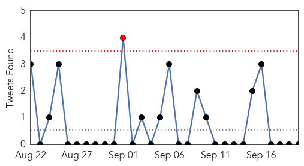
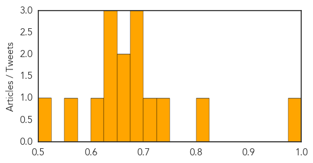
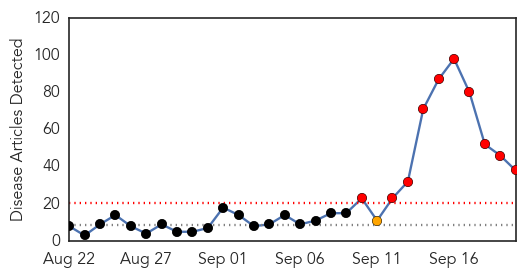
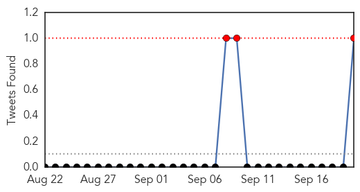
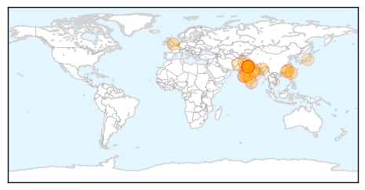
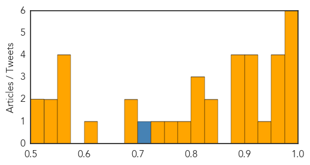

Unknown
30-Day Web Trend
0 alerts, 0 warnings

30-Day Twitter Trend
3 alerts, 0 warnings

Article Locations

Article Confidences
Top Articles:
- 0.981
- Saudi minister says MERS cases are reducing before haj
- 0.808
- New flu shot more effective than last year
- 0.734
- Kingsport Times-News: TDH: Be aware of Sickle Cell disease
- 0.714
- New York Medical Malpractice Lawyer Hospital Infections Serious Problem in NY
- 0.689
- ‘Suffocate and bake’: new US method of killing bird flu-infected poultry by heat stress prolongs suffering by up to 40 minutes
- 0.682
- Malaria deaths fall 60 percent since 2000: UN
- 0.680
- Diphtheria returns to Kerala; govt steps up drive
- 0.669
- Report More On Preventive Health Care – Journalists Urged
- 0.656
- Owners urged to confine dogs for two months - Veterinary Dept
- 0.649
- No sign of rabies on victims of dog bite so far - Nation
- 0.636
- Fifteen Egyptian pilgrims die in Mecca during Hajj
- 0.629
- Diphtheria returns to Kerala, two die
- 0.610
- Confine dogs for two months to prevent infection – BorneoPost Online
- 0.552
- Egyptian pilgrim death toll rises to 15: Health ministry
- 0.502
- Acute shortage of essential drugs in remote Bajura
Top Tweets:
- 0.584
- RT: Oktoberfest es TT en Venezuela. ¡El de la Colonia Tovar es considerado el 4to mejor del mundo!
Dengue Fever
30-Day Web Trend
10 alerts, 1 warnings

30-Day Twitter Trend
0 alerts, 0 warnings

Article Locations
Article Confidences
Top Articles:
- 0.989
- Dengue on the rise
- 0.988
- 36-Year-Old Dies of Dengue, Toll in Delhi Touches 22
- 0.988
- Docs: Erratic rain may lead to spurt in dengue, fever
- 0.986
- Tainan welcomes dengue fever ‘cleanup consultants’
- 0.985
- Rain revives dengue fear in New Delhi
- 0.976
- :: News4u :: Four more die of dengue, toll rises to 20
- 0.968
- No let up: At least 20 new dengue cases confirmed in capital
- 0.959
- Delhi: Rain spikes dengue scare as toll touches 21 : Mail Today, News
- 0.954
- 'Most dengue patients had visited Delhi, Arunachal'
- 0.953
- Delhi Govt. to turn 55 dispensaries into 'Fever & Dengue' clinics
- 0.935
- Why second dengue infection can be life-threatening
- 0.924
- Dengue count 12 at RIMS
- 0.920
- China's Guangdong reports 664 dengue cases
- 0.920
- Cases of disease may rise after rains
- 0.915
- Dengue outbreak: Delhi residents complain about civic bodies “ill-preparedness”
- 0.895
- Dengue Fever Outbreak
- 0.885
- What tests needed for diagnosing dengue?
- 0.883
- Centre issues fresh advisory to government
- 0.876
- Dengue toll reaches 23 in Delhi
- 0.843
- Dengue fever case reported on Orchid Island
- 0.828
- Wake-up call about diseases post showers
- 0.824
- Down with dengue-like symptoms, Chandigarh teenager dies at PGI
- 0.817
- Too many questions, few credible answers
- 0.808
- GMC staffer dies of dengue, 2nd death in 2 days
- 0.784
- Awareness seminar, walk arranged at RMC & HFH
- 0.769
- Toll rises to 22 as two more die of dengue
- 0.733
- Delhi Health Minister inspects two hospitals
- 0.696
- One more JE case detected
- 0.683
- Dengue: Ajay Maken Files PIL Against Delhi Government For Being Inefficient In Curbing Dengue
- 0.617
- NDMC issues 17th notice to AIIMS over Aedes mosquitoes breeding on campus : Mail Today, News
- 0.571
- It's not time to indulge in blame game, says Nadda
- 0.558
- Anti-dengue drive launched in Delhi; Fumigation process being carried out at Arvind Kejriwal's residence
- 0.556
- Union Minister JP Nadda on Dengue Outbreak
- 0.551
- Dengue scare: It's not time to indulge in blame game, says JP Nadda
- 0.549
- Dengue cases doubled in Delhi, Punjab but showed sharp drop in many states
- 0.528
- India's health care needs booster shot
- 0.514
- RG Colony rues lack of action, info from MCD
- 0.502
- Poor sanitary conditions plague LLRM
Top Tweets:
- 0.913
- Flavivirus news: After dengue, health experts warn Delhiites of swine flu - The Hindu: The Hind... http://t.co/oKUhJdZiGH pathogenposse